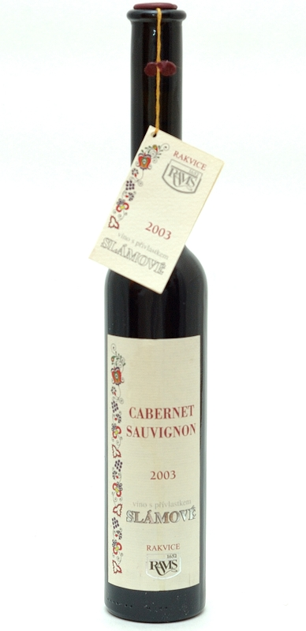
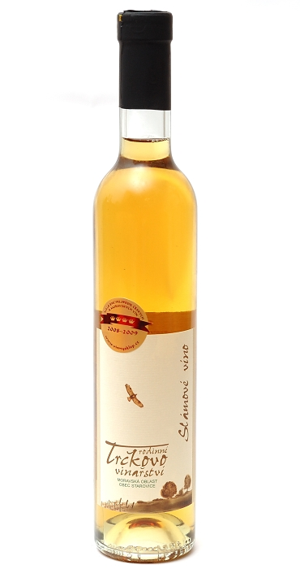

Stranka: | 1 |
| Slámové Cabernet Sauvignon ročník 2004 | |||
| Výrobce | Ravis Rakvice |  | |
| Dostupnost | Skladem | ||
| Oblast | Velkopavlovická | ||
| Objem | 0,2 l | 465,- Kč/Ks | |
| Obsah cukru | sladké | Koupit | |
| Obsah alko. | 12,2 % | ||
| Charakteristika: | |||
| Víno bylo vyrobeno z vyzrálých hroznů, které po sklizni byly uloženy na slaměné rohože. Tam zůstalo 3 měsíce. Při lisování vysušených hroznů byla docílena cukernatost 27 stupnů. Víno má plnou chuť po medu. | |||
| Slámové Sauvignon a Rulandské Šedé 2004 | |||
| Výrobce | Trčka Zdeněk |  | |
| Dostupnost | Obvykle skladem | ||
| Oblast | Velkopavlovická | ||
| Objem | 0,375 l | 689,- Kč/Ks | |
| Obsah cukru | sladké | Koupit | |
| Obsah alko. | 8,5 % | ||
| Charakteristika: | |||
| Víno slámově zlaté barvy a kořenité vůně s náznaky sušených meruněk, medu a mandarinky. Chuť je mohutná, sladká, podpořená ušlechtilou kyselinkou. V dochuti jsou patrné stopy po medu. | |||
| Veltlínské zelené slámové ročník 2003 | |||
| Výrobce | Zborovský | ||
| Dostupnost | Obvykle skladem | ||
| Oblast | Velkopavlovická | ||
| Objem | 0,375 l | 620,- Kč/Ks | |
| Obsah cukru | sladké | Koupit | |
| Obsah alko. | 10,5 % | ||
| Charakteristika: | |||
| Má nádhernou, kořenitě medovou a velmi výraznou květnatou vůni. V chuti můžete cítit přezrálé hrozny a kandované ovoce. Je velmi intenzivní zlaté barvy. | |||